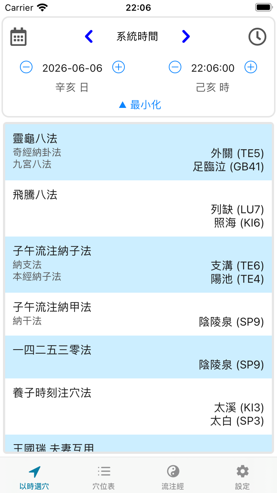
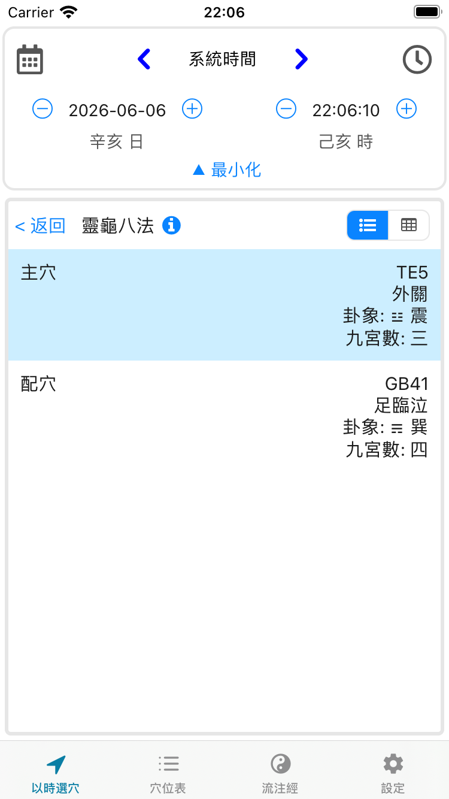
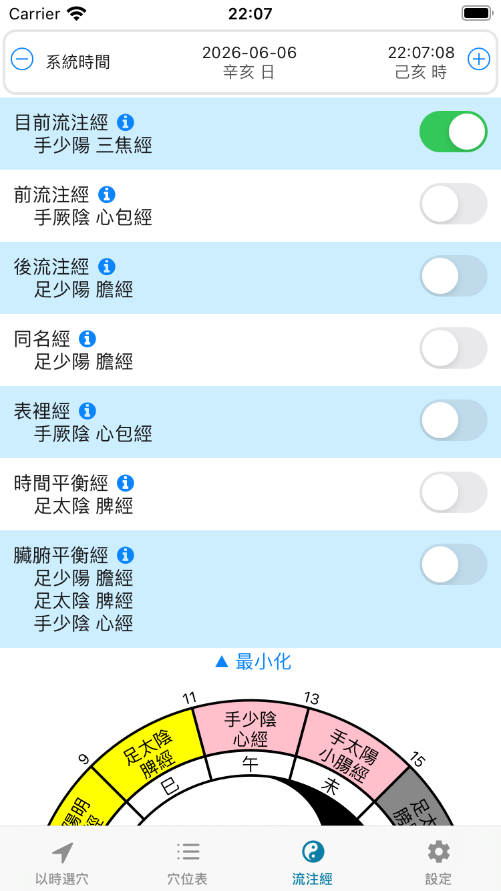
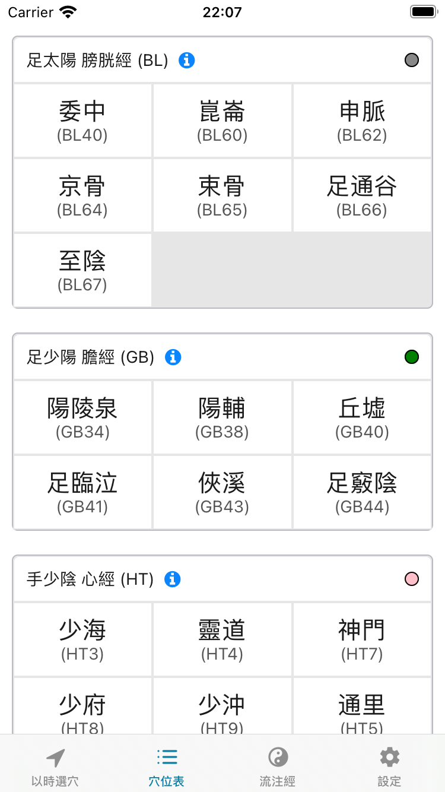

依天干地支推演經氣流注，為任一時刻計算靈龜八法、飛騰八法、子午流注納子法與納甲法的開穴，並支援指定日期時間的擇時開穴。 Compute the open acupoints for any moment — Ling Gui Ba Fa, Fei Teng Ba Fa, and the Zi-Wu Liu-Zhu branch & stem methods — driven by the heavenly-stem / earthly-branch rhythm of Qi, with date-time selection for planning ahead.

每一刻計算當下的主穴與配穴，並附卦象、九宮數、五行與時辰說明。For each moment the app derives the host & coupled points, with trigram, Jiu-Gong number, Five-Element and hour annotations.
八脈交會穴配九宮八卦，按日時干支取主客配穴。Eight confluent points mapped to the Jiu-Gong / Ba-Gua, opened by the day-and-hour stem-branch.
以天干直接配八脈交會穴，計算當令開穴。Confluent points opened directly from the heavenly stem of the hour.
依十二時辰當令經，取五輸穴行補母瀉子。Five-Shu points of the on-duty meridian by the twelve double-hours; tonify-mother / reduce-son.
按日時干支逐時開五輸穴與原穴，循經納甲。Five-Shu and source points opened hour-by-hour along the stem cycle.
細分一時辰為五刻，逐刻推演開穴，精確至約 24 分鐘。Divides each double-hour into five Kè, opening a point roughly every 24 minutes.
夫婦配穴互用，補充八法之開穴選擇。Husband-and-wife paired points, complementing the eight-method openings.
顯示此刻開穴，或調整日期時間預先排程。See the open points right now, or set any date & time to plan ahead.
十二時辰經氣流注圖，直觀掌握當令經絡。A twelve-hour meridian-flow clock showing the on-duty channel at a glance.
依經絡瀏覽穴位，五行配色一目了然。Browse acupoints by meridian, colour-coded by Five Elements.
繁體中文、简体中文、English、Français。Traditional & Simplified Chinese, English and French.



子午流注是中醫針灸的一個分支，闡述人體經絡中氣血隨時間盈虛開闔的節律，並據此選取最佳的開穴時機，以順應與維持人體氣機的流動。
Chrono-acupuncture is a branch of acupuncture in Traditional Chinese Medicine that describes the rhythmic, time-dependent flow of Qi and blood through the body's meridians, and selects the optimal points and timing to harmonise and maintain that flow.
本應用不收集任何使用者資訊。This application does not collect any user information.
免費版使用 Google 廣告，會收集使用資訊及機器號碼。The free version uses Google Ads, which collect usage data and the device identifier.
適用於 iOS 與 AndroidAvailable on iOS and Android